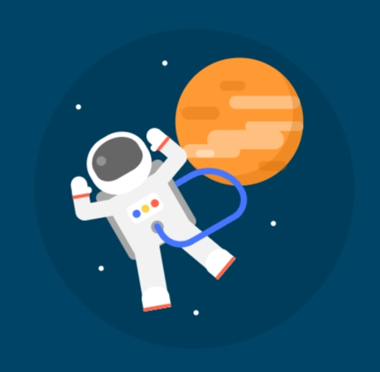

01
Наташа Романофф
MARVEL / CSS CHARACTER
Чёрная вдова
Парные дубинки вспыхивают электрическими импульсами. Наташа принимает боевую стойку.
ВАРИАНТ 02 · ЛАБОРАТОРНАЯ РАБОТА 3
Космос, немного геометрии и герои, которые умеют больше.
Четыре маленьких эксперимента с большим характером.
ДАЛЕКО ОТ ЗЕМЛИ
Космонавт свободно парит внутри круглого окна. Звёзды мерцают независимо, каждая в своём ритме.
Скафандр, шлем, планета и шланг нарисованы CSS. Круг обрезает содержимое через overflow: hidden. Космонавт перемещается и наклоняется, звёзды меняют прозрачность и масштаб с разными задержками.

МАЛЕНЬКОЕ ПРЕВРАЩЕНИЕ
Полоски перекрещиваются. Средняя уходит вправо, появляется контур круга, меняется фон — и всё начинается заново.
Цикл — 10 с. Круг рисуется CSS-переменной угла, conic-gradient и маской.
ПОЙМАТЬ ОБЩИЙ РИТМ
Точки встречаются и расходятся всё медленнее, постепенно подхватывают волну, затем снова выстраиваются в линию.
За 14 с частота и размах горизонтального движения уменьшаются. Одновременно нарастает вертикальная волна со сдвигом фазы между соседними точками. В конце её амплитуда плавно становится нулевой, и все восемь точек возвращаются на исходные места.
Все траектории записаны в CSS-ключевых кадрах. Переключатель ставит движение на настоящую паузу.
18 / НЕМНОГО НЕВОЗМОЖНОГО
Пять знакомых характеров,
собранных из форм CSS.
Нажмите «Супердействие».
Наташа Романофф
MARVEL / CSS CHARACTER
Парные дубинки вспыхивают электрическими импульсами. Наташа принимает боевую стойку.
Ванда Максимофф
MARVEL / CSS CHARACTER
Ванда поднимает руки, формирует алые сферы и выпускает кольца магии.
Пьетро Максимофф
MARVEL / CSS CHARACTER
Пьетро срывается с места: двигаются руки и ноги, позади остаются скоростные следы.
Тони Старк
MARVEL / CSS CHARACTER
Реактор и глаза загораются, рука поднимается, из ладони выходит световой импульс.
Клинт Бартон
MARVEL / CSS CHARACTER
Клинт натягивает тетиву, выпускает стрелу и поражает мишень.
Все персонажи — авторские стилизованные CSS-рисунки, без изображений, SVG и canvas. Действия запускаются независимо через checkbox; повторное нажатие возвращает спокойную позу.